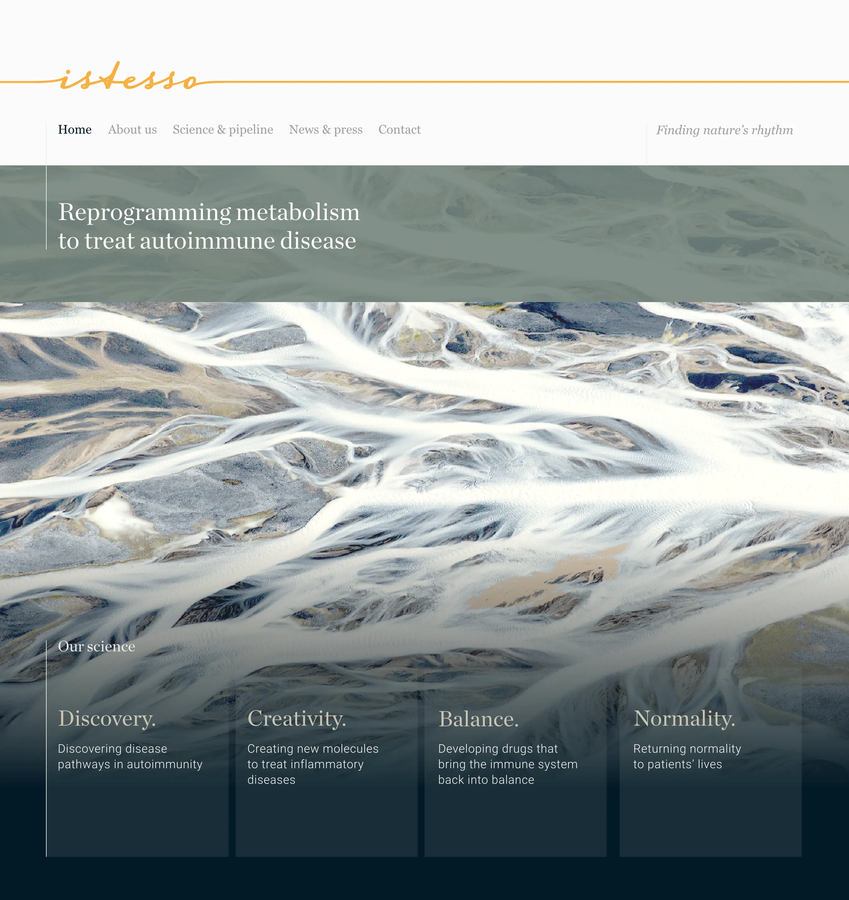
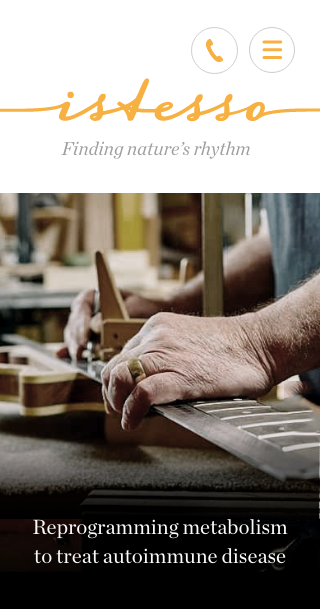
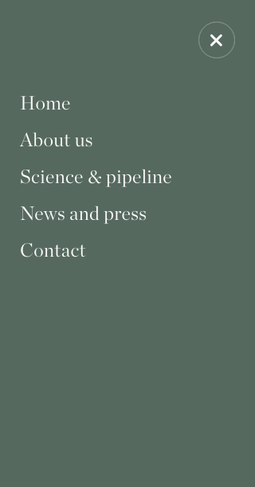
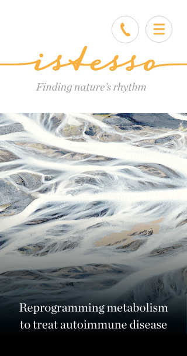
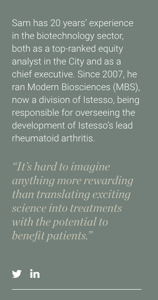
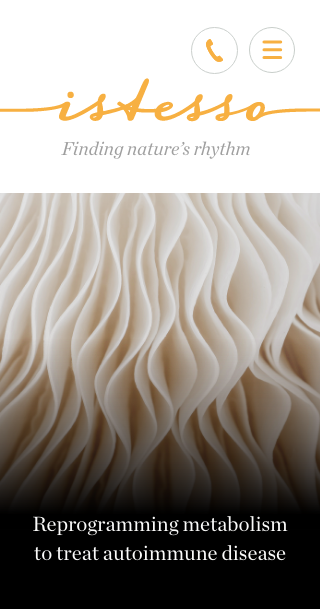
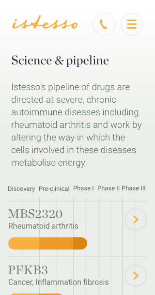
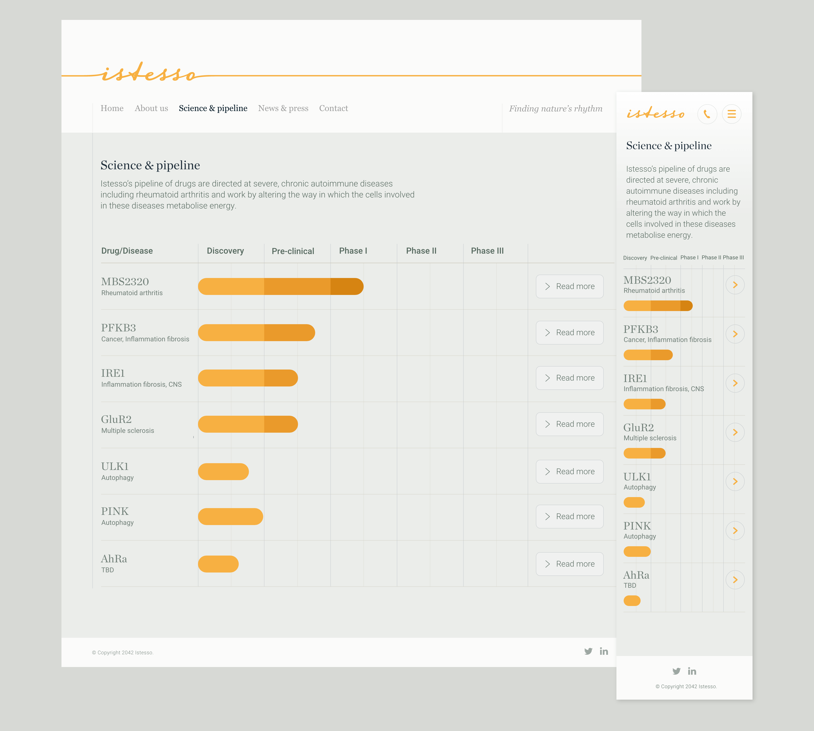
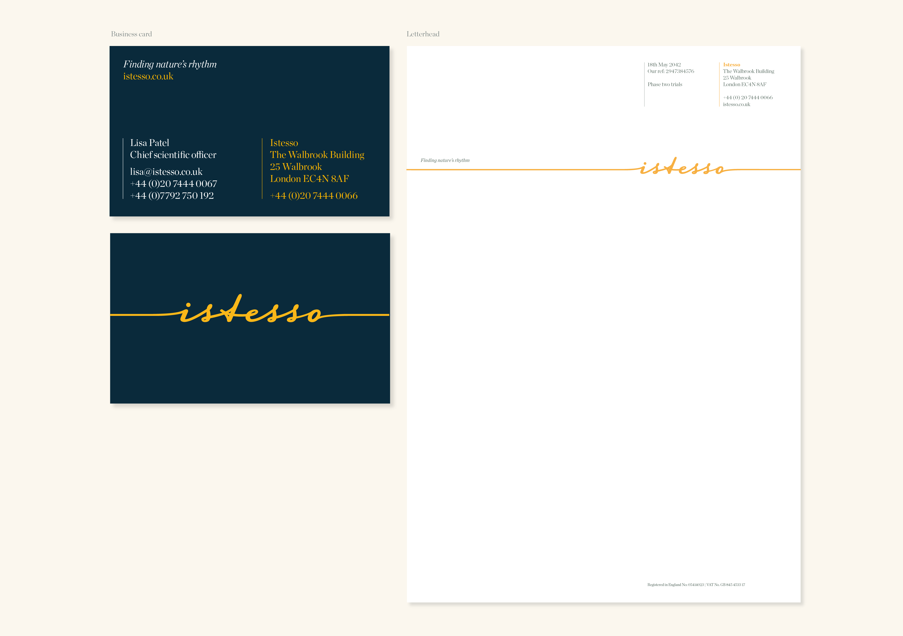

Istesso were called Modern Biosciences when I met them. They had no real brand or assets, just a germ of an idea: the musical term l'istesso – meaning, 'return to the same tempo as before'. This concept mirrors the intent of their autoimmune* drugs that help a patient's body restore normality after attacking itself.
* An autoimmune disease is where your immune system mistakenly attacks your body.
The Istesso logo contains a line preceeding and following the logotype, representing normal immunity, I call it the, 'line of normality'. The logotype echos both autoimmune disease and their life-changing drug response to it. Scientific elegance and the roots of musicality are echoed by its beautiful flow.

This is the homepage of the Istesso website, it had three image variations that randomly changed when users visited the site, all based on the theme of Finding Nature's rhythm. A line I came up with that really represents what they are about. Shown here are Icelandic fjords showing the veins of consistent water movement over years of flow.






Shown here is a selection of screenshots from the mobile version of the Istesso website. The typography is elegant and understated and the imagery continues to reflect the theme of 'nature's rhythm'.
I was so taken with the spirit of the individuals behind this business, I wanted their portrait shots to convey this. To achieve this I decided to have Nerf gun battles during the photoshoot, in the hope that by being playfully engaged we might spontaneously capture their individual essence on camera.
Shown above are a few Istesso homepage visuals I liked, but that were not selected. Also a video of the final animated menu style for the site; I call it the 'ripple nav' as the motion echos 'nature's rhythm'.

The desktop and mobile UI design for an inner page of the wesbite – Istesso's scientific pipeline. Getting it to work well for mobile and convey accuracy with clarity was tricky...

The final Istesso business card and letterhead design. The business card was foiled yellow and white on duplexed Curious Skin Dark Blue 270g. It looked utterly stunning!
I’ve worked with James for two and a half years on several projects including a rebrand of my company, website design and development of presentation materials for meetings and conferences. James is one of a kind! He has a passion for art and design and an eye for detail which is so well developed that when he presents his ideas they seem as though they must have always existed because they are so fit for purpose and beautiful. James brings a thoughtful, considered approach to his projects, and in our work has always put our needs front and centre, and then delivered above and beyond what we would have expected to achieve.